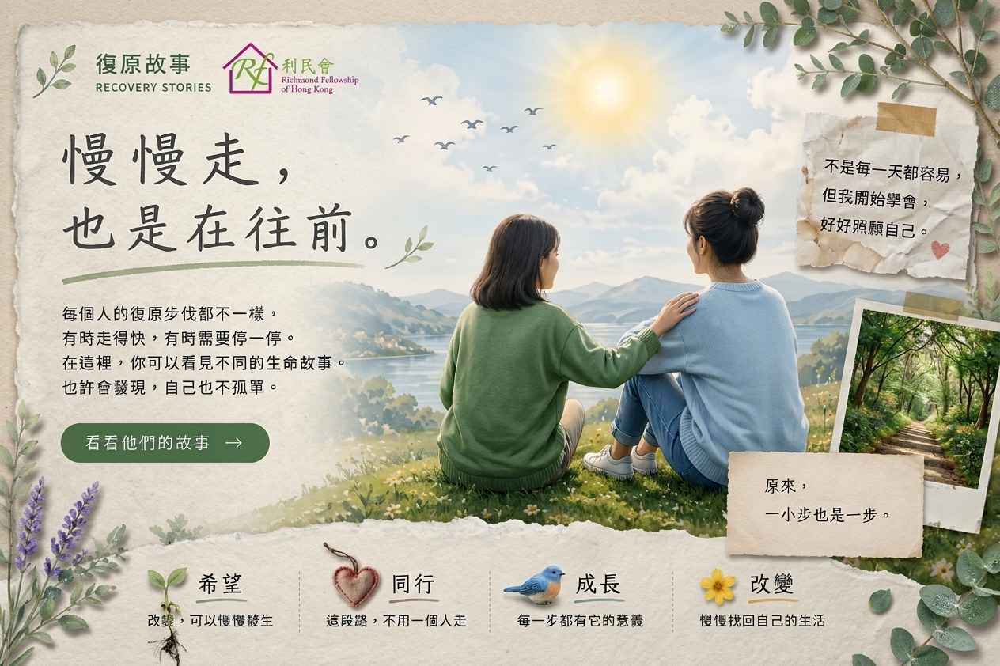

photo_camera
文字與攝影
思晴
•
走出抑鬱症第四年
用鏡頭記錄日常的轉變：在微風與落葉裡找回自己
曾經好幾個月連拉開窗簾的力氣都沒有。直到利民會社工送給我一本空白速寫本，我開始走出門拍下街角的野花。相機不是為了拍得漂亮，而是提醒我：我還能看見美。

每個人的復元步伐都不一樣。有時走得快，有時需要停一停。
在這裡，你看見不同的生命故事，聽見真摯的心跳聲。也許會發現，這條路上自己從不孤單。
復元沒有一條指定的路,每個人都可以走出自己的步伐
曾經好幾個月連拉開窗簾的力氣都沒有。直到利民會社工送給我一本空白速寫本，我開始走出門拍下街角的野花。相機不是為了拍得漂亮，而是提醒我：我還能看見美。

幻聽最嚴重時，世界像一個充滿刺耳噪音的鐵盒。利民會的同路人支援小組沒有人質疑我的恐懼，大家只是安靜地泡好花茶遞給我。那是我五年來第一次感覺被完整理解。
用我經歷過的痛，去接住另一個正在下墜的人。復元不是沒有傷疤，而是能帶著傷疤，溫柔地對待世界。
陪伴不代表一個人承擔所有
家人患病之後，我先學懂照顧一個人之前，也需要照顧自己。
相入面不只是病，還有笑容，也有一直被忽略的日常。
三位照顧者分享如何在同行小組中找到資訊、空間與支持。
一句溫柔的肯定，可能成為某個人今天堅持下去的全部理由。留下你的暖心話語。
「今天曬到了溫暖的太陽，心情也放晴了一點點。你也一樣，慢慢走，沒關係的。」
「致全天下的照顧者：你們已經做得非常棒了，今天請記得獎勵自己一個甜品！」
「給正感到疲憊的朋友：允許自己今天只呼吸、只發呆，這本身就是很了不起的努力。」
「原來，一小步也是一步。感謝利民會的故事，讓我今天終於有勇氣打開大門散步。」
利民會致力於讓精神復元人士擁有平等尊嚴的社區生活。您的每一筆捐助，都將直接支持照顧者喘息計劃、日間訓練小組以及 24 小時熱線服務。
每年受惠復元及照顧者人次
全年無休電話支援守候
全心傾聽、接納與尊重